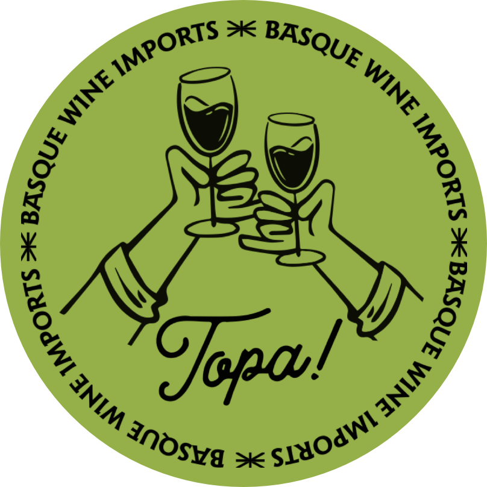

Gorka Izagirre
Zura
A full-bodied, single-varietal white, fermented and aged in French oak. Sur lie. 100% Hondarrabi Zerratia.
White
Oak
Sur lie
Download tech sheet

Our portfolio · Atlantic Basque Country
Hand-picked from two family producers — Gorka Izagirre in the hills above Bilbao, and Zudugarai on the cliffs above Getaria. All rooted in indigenous Hondarrabi grapes that grow nowhere else on earth.
From Gorka Izagirre
Gorka Izagirre
A full-bodied, single-varietal white, fermented and aged in French oak. Sur lie. 100% Hondarrabi Zerratia.
Gorka Izagirre
An unexpected and delightful Basque red — not your grandmother's red wine. 100% Hondarrabi Beltza.
Gorka Izagirre
The winery's eponymous white blend. Notes of fresh apple and citrus. 50/50 Hondarrabi Zuri & Zerratia.
From Zudugarai
Zudugarai
Intense nose of white fruit and citrus. Balanced acidity on the palate, with a saline finish. 100% Hondarrabi Zuri.
Zudugarai
Fermented in stainless steel with native yeasts. Red fruits, lime, citrus, minerals. 60% Hondarrabi Beltza, 40% Hondarrabi Zuri.
Zudugarai
A traditional-method sparkler aged 26 months on the lees. Nose of fresh grass and honey. 80/20 Hondarrabi Zuri & Beltza.
The grapes
Native Atlantic grapes that grow in small, concentrated clusters — brimming with character, and only here. Each variety has its own field notes on the journal.
White
The Atlantic white. Fresh, joyful, saline — green apple and a thread of acidity that makes everything else on the table taste better. The grape behind every classic txakoli.
Read the field note →White
The quieter sibling. Elegant, voluminous, complex — with notes of white flowers, baked apple, and the longest finish on the tasting bench. Often barrel-aged.
Read the field note →Red
Fruity, deep, herbaceous, exclusive. The coastal red that almost vanished — and that Gorka Izagirre has more of than anyone else on the planet. About six hectares, worldwide.
Read the field note →Trade & retail
For restaurants and retailers in Kansas City, St. Louis, and select Midwest markets. Write to Kerri for the full portfolio, pricing, and samples.